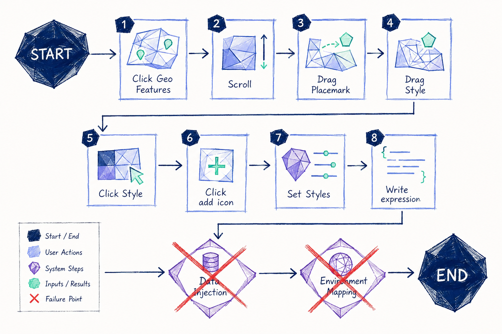

Geospatial Interface System: Scaling Complex Workflows
Discovery: Workflow Friction
Usability analysis of our configuration tasks revealed consistent workflow breakdowns. Initial setup required excessive manual coordination, distracting engineers from high-value tasks like database configuration.
As we mapped out the technical process, we identified critical "Failure Points" at the ingestion stage. Our UI needed to clear the path for engineers to focus on their own complex data structures rather than struggling with tool overhead.

The Strategy: Workflow Collapse
To resolve these inefficiencies, we moved away from open-ended manual configuration. We implemented a "Workflow Collapse" strategy to streamline the user experience.

- Replacing Complexity: Transitioned from chaotic property setting to a "Default Preset" model.
- Structured Composition: Optimized front-end tasks so that the most effective configurations are chosen by default.
- Empowering Engineering: Presets provide immediate consistency while remaining fully editable for custom use cases.
Systemization: Design Consistency
We introduced a visualization design system based on Esri and Cesium patterns. By shifting from ad-hoc logic to repeatable, consistent rendering patterns, we transformed the developer experience from manually assembling map behavior to composing structured, reusable interface patterns.
Outcome
The result is a unified system for building geospatial applications. By reducing configuration variance, we have enabled the creation of high-density dashboards at scale with significantly lower cognitive overhead.